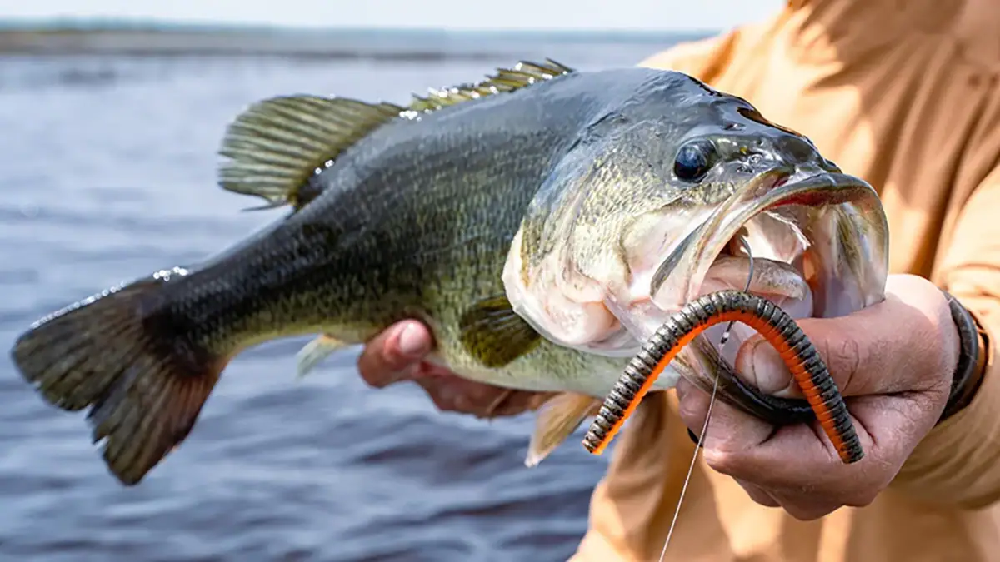

International & Destinations
Z-Man Fishing launches sinking Kingpin and Stuntman soft lures

Z-Man Fishing launches sinking Kingpin and Stuntman soft lures
Tackle maker Z-Man Fishing has introduced a new sinking formulation of its signature ElaZtech material, debuting in two bass lures: the Kingpin soft stickbait and the Stuntman soft jerkbait. Unlike traditional salt-weighted soft plastics, the density is built directly into the polymer, giving a sink rate that stays consistent no matter how much the bait is fished. Both lures are made in the United States and reach retailers this coming autumn, priced at around seven US dollars each.
Source: Wired2Fish